I feel like I have always been drawn to buildings and architecture. From Lego towers that almost touched the ceiling to massive blanket forts using every pillow and blanket in the house, I have always loved envisioning new ideas of how a place could look. As I got older my Lego creations moved into the Minecraft world, where I could build entire worlds using the same simple blocks and a never-ending imagination.
I loved going downtown with my Dad to see the massive old brick buildings that line the streets of Winnipeg's Exchange District, or seeing the different types of buildings in different parts of the world when we would go on vacation. It was so neat to see that different areas of the world, just like different times in history, required and built different types of buildings.
Minecraft was, and still is, a really fun game that allows people of all ages and abilities to create and explore amazing worlds. But as I got older I wanted to make buildings and environments that were more like the video games I was playing and the movies I was watching. So when I started to think about my Studio project, I knew it would have to involve architecture, 3D modeling, and cool buildings. The only problem was that I didn't know anything about architecture or 3D modeling. Thankfully, it turns out those are the sorts of problems that make a great Studio project. Studio class became the opportunity to stop building for fun and start exploring the potential of building for a living.
What started as a curiosity became a semester-long investigation into how technology is changing who gets to design buildings, and how well they can design them.
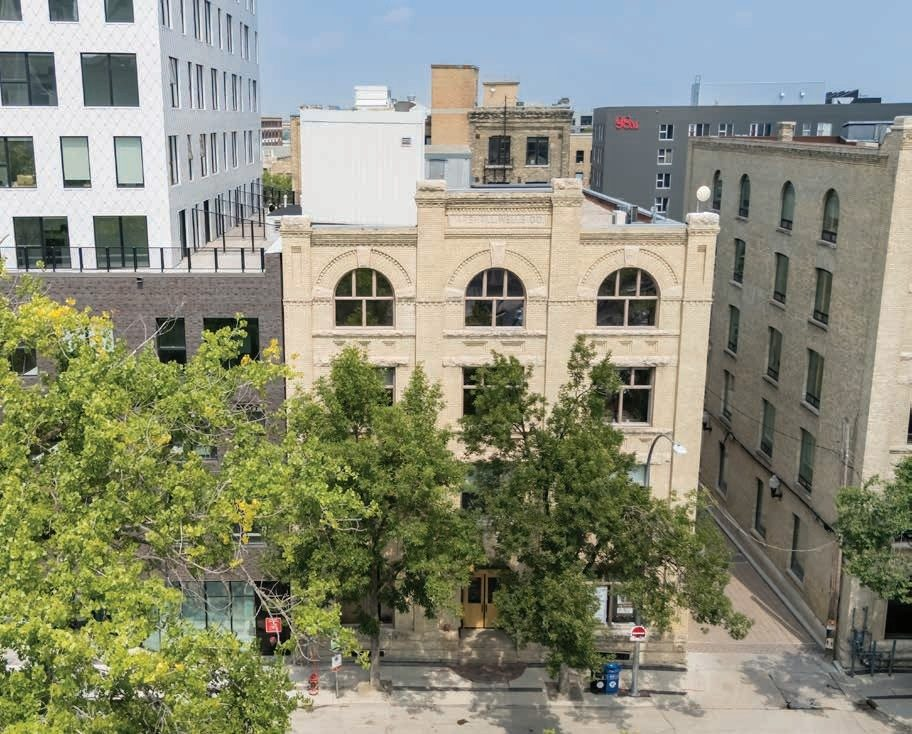
123 Bannatyne Ave, Winnipeg, the real building that inspired Gavin's most detailed model
GavinKS_StudioFinal.blend›The Project
Design buildings. Think like an architect.
My project began with a simple question: can I, a student with no formal training in architecture or 3D modeling, learn to design real buildings and models using the same software professionals use? The answer turned out to be: yes, with the right tools and a lot of guidance and effort.
The initial plan sounded simple:
Pick a software
I had narrowed the options to Fusion, Blender, and SketchUp.
Learn the software
Use every available resource to become as much of an expert as possible: watch online videos, complete online tutorials, join Blender user groups, and anything else that might help me understand and learn the program.
Recreate existing buildings
Practise, practise, practise. Keep building things until I'm comfortable enough to recreate existing buildings. I selected the Leaning Tower of Pisa and 123 Bannatyne from the Exchange District in downtown Winnipeg. I love old brick buildings, and this is one I was able to get into and walk around.
Design my own building
The final challenge: design a building of my own creation, using actual constraints from a real in-progress development site in Winnipeg, thanks to a contact at AtLrg Architecture, who were kind enough to guide me through a typical initial development design workflow.
Central Idea
"How new technology and emerging tools are making design more accessible to more people, and how that is impacting the overall design process."
Goal 01
Master a professional 3D design tool
Learn Blender from scratch, the software big game studios, film production houses, and increasingly, architecture firms use.
Goal 02
Model real-world buildings
Recreate one famous landmark building along with a building local to Winnipeg to showcase the ability to capture details and realism.
Goal 03
Design something original, for a real site in Winnipeg
Using real-life constraints and site conditions collected from discussions with a real Winnipeg architecture firm (AtLrg), develop a completely unique design that falls within the requirements and guidelines provided.
GavinKS_StudioFinal.blend›The Journey
From Minecraft to the real thing.
My path from Minecraft builder to Blender designer was a lot more difficult and frustrating than I had originally planned. Learning Blender took twice as long as I initially thought, and the amount of effort that goes into a single building was more as well. Thankfully, in the end I was able to grasp the important aspects and begin to develop the quality and style of buildings I could only dream of in Minecraft.
Starting with the basics, I began to evaluate the various modeling tools available to me and laid out a plan to educate myself on how to use them. The options all had their pros and cons, and they all seemed a lot more difficult than Roblox. Fusion seemed like an ideal option because it's made by Autodesk, the industry leader behind AutoCAD, but it was difficult to even get started because of their licensing process. I had to restart it a few times before I actually got a student licence, and even then it ran very slowly on my computer. Blender was the other front-runner, and to be honest I had always been interested in it because of its ability to do so much more than simply design a building: once the building is done, you can keep creating beyond it, full city environments for video games and even movies. It seemed a little more difficult to learn, but I felt that because I was so excited to learn it, I would enjoy the process a lot more… that was not exactly the case.
Start: Keyframe 001
It started with blocks
When I started using Minecraft I was so young, and everything computer-related was so new to me, that every little thing I created seemed amazing and wonderful. I think that made the gradual learning process a lot more enjoyable and natural.
Eventually the limitations of Minecraft and the tediousness of building in it pushed me to look for something better, but each time I tried, I found myself coming back. That is, until I found Roblox, a similar game that let users create their own worlds, but it was very restrictive and also felt a bit childish. What I liked most about Roblox was that while it did allow me to create and design, it also gave me the ability to explore and share my creations.
"It was great to be able to build these cities and recreate famous landmarks and monuments, but for some reason they never felt quite real enough, and always seemed a little unfinished."
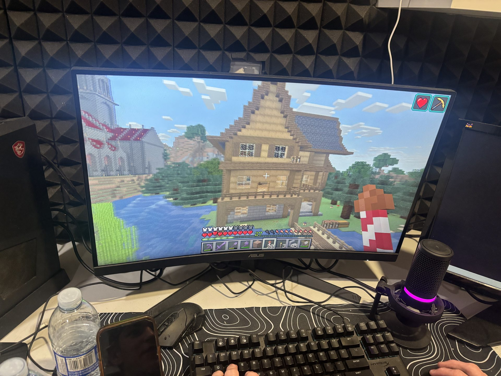
Where it began: building in Minecraft
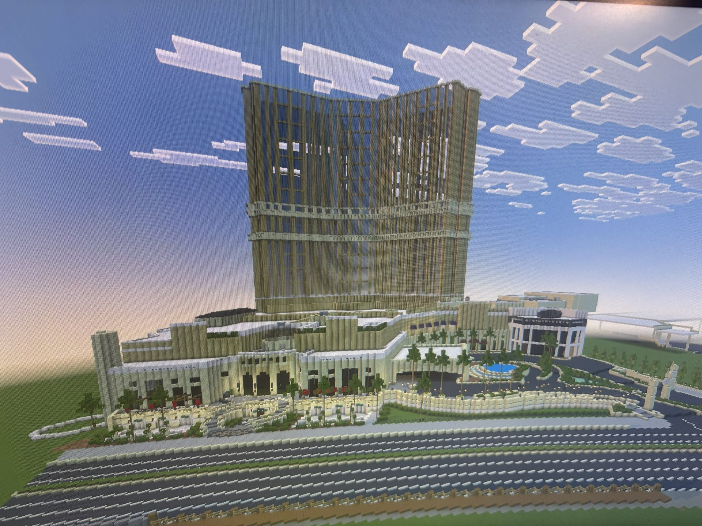
Minecraft recreation: a full Las Vegas resort, block by block
Step 02: Keyframe 060
Discovering Blender
After realizing that Fusion was not what I was ultimately looking for, I decided to jump into Blender 100%. It was a lot harder than I was expecting, and I was already expecting it to be hard. Thankfully there are literally thousands of hours of tutorials online that help you learn everything from downloading and installing the application to getting your first item built. What made me choose Blender over Fusion and other design tools was that Blender was the only option that also had the ability to explore and expand on my creations.
I quickly realized that being able to build anything I could think of, in any way I wanted, came at the expense of nothing being easy. This was the first real challenge that made me second-guess whether this should be my Studio project.
Thankfully I found an online resource that offers to personally walk you through tutorials, so they can see exactly what I was doing, and what I was doing wrong, and help me over those initial difficult learning stages. I've included a few highlights from one of these sessions because I think it's another example of technology changing the way people learn, even in something as specific as Blender.
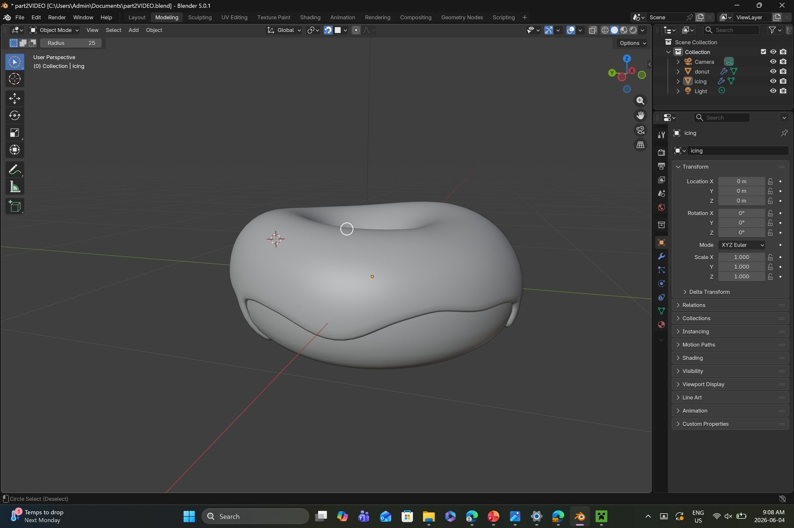
First Blender project: the classic donut
REC ● Tutoring session
Edited highlights: live 1-on-1 Blender tutoring, from first cube to finished build
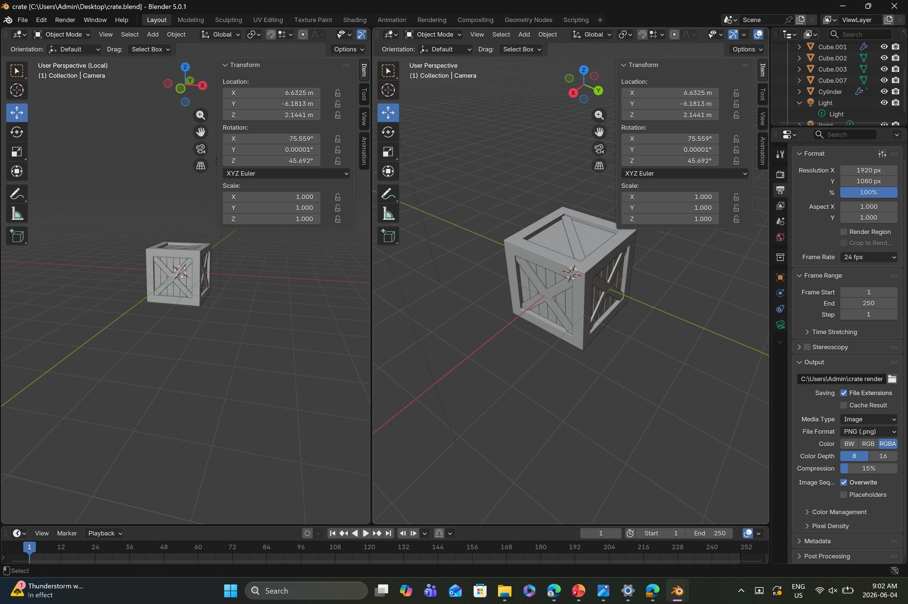
Practice build: modeling a simple crate
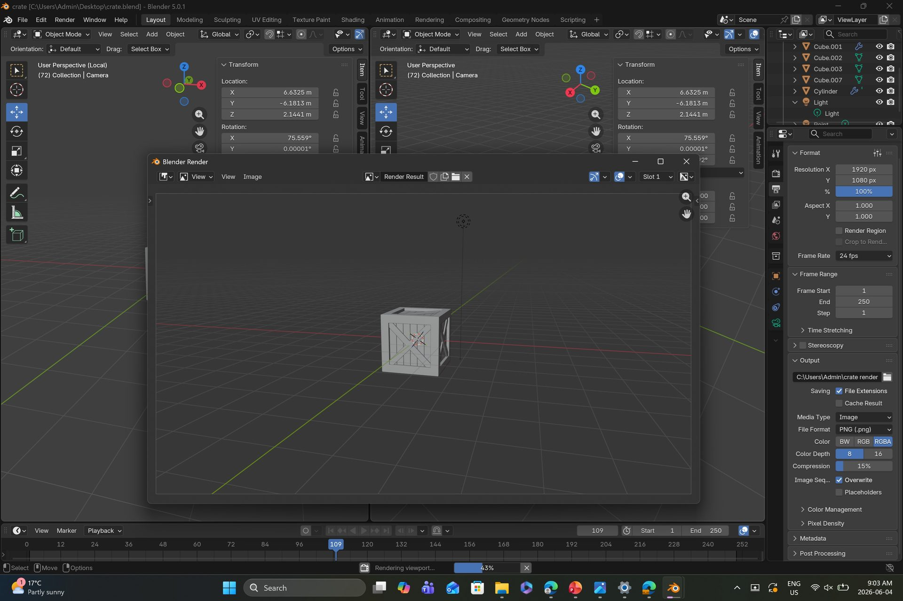
The same crate, first full render
Step 03: Keyframe 120
The Leaning Tower of Pisa (and my second setback)
The first building I made start-to-finish for the Studio project was the Leaning Tower of Pisa. It was a strategic choice, not only because of the endless reference images available online, but also because of its recurring shape on each level, which Blender handles well. It's also one of those buildings almost anyone can guess within the first second of seeing it.
This is where the next significant challenge appeared. I had not realized how hard it is to add colour, texture, and lighting to objects inside Blender. Creating the geometry was already a challenge, but learning how to create detailed surfaces and textures, and how shadowing impacts them, was way more work than I had ever thought. For this reason, I adjusted my Studio goal: I would still focus on the form and materials of the buildings, but not too much on their colour or shadowing.
Fly-over
Fly-over of the Tower of Pisa model in the Blender viewport
Step 04: Keyframe 180
123 Bannatyne
I really wanted to get this one right. Having grown up loving to walk through the Exchange District with my family and look at all the cool old brick buildings, with their fire escapes and large brick archways. I felt I had a very good idea of what details and approaches would be needed to capture it all.
This build took significantly longer than the Tower of Pisa and similar practice builds, but I feel the results speak for themselves. The extra time spent on the detailed window and column work was so effective that it even came through on the 3D-printed version, another example of new technology changing how design and architecture is approached. While 3D printing was not part of my initial Studio plan, it quickly proved itself a very useful and rewarding tool.
⟢ Drag the slider: real photo vs. Blender model
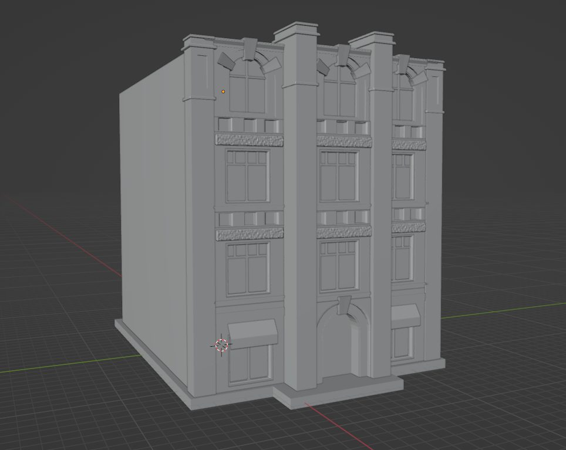
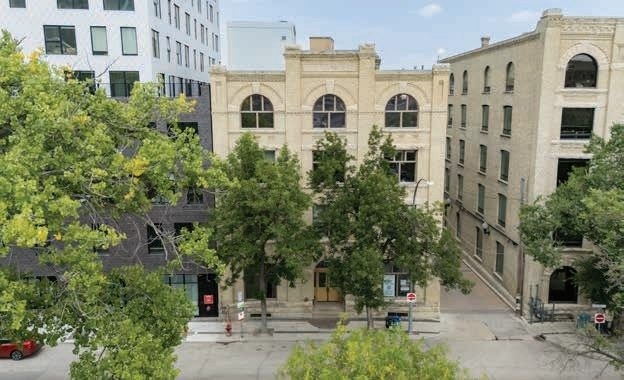
Real photoBlender model
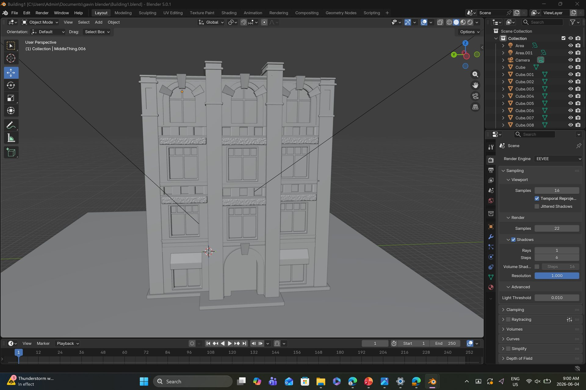
Window by window: the model in progress
Turntable
Fly-around of the finished model
Final: Keyframe 250
Designing from scratch, with a real architect
3D printing became a very important part of my design process, and it was AtLrg that showed me the true power 3D printing has in communicating design ideas to people who may not be as experienced in design and rendering. The ability to quickly print an initial massing concept, so someone can see it and physically hold it in their hand, can save tons of wasted effort.
I learned this quickly after our first meeting with Sean from AtLrg. When I was given our site constraints, I initially designed a building to sit on the full site dimensions, only to learn there were significant utility and service lines underground on the south edge of the site that we would not be able to build on. Having a physical 3D model to look at and move around helped in figuring out which portions of the building had to be changed or deleted entirely. That process repeated itself with many of the constraints imposed on the site, whether a city requirement, an existing condition, or a client-imposed restriction.
What the architect revealed
Real architectural design isn't just aesthetics, it's navigating an invisible network of constraints that determine where, how high, and how wide you can build. Each constraint changed the shape of the building.
Driveway access requirements
Underground service lines
Sidewalk setbacks
Parking minimums
Building height limits
City utility corridors
I had a hard time designing something other than a brick building for the site, because of its location in the Exchange District. There was no constraint against using brick or making it look like a warehouse, and I really felt a building like that would fit nicely into the area, look old, but offer brand-new construction.
The site was quite large, which made rendering difficult. I had to shrink the building so my computer could render it without crashing; otherwise it would have used more of the full site dimensions. I also wanted the building lifted off the ground so people could walk across the lot underneath without having to go inside. The lot covers an entire city block, and that shortcut makes walking through the area much easier.
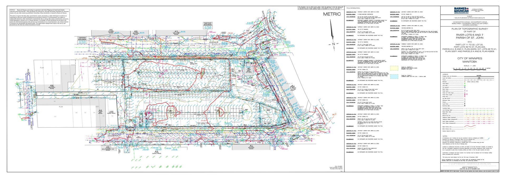
City topographic map: underground utilities & site constraints
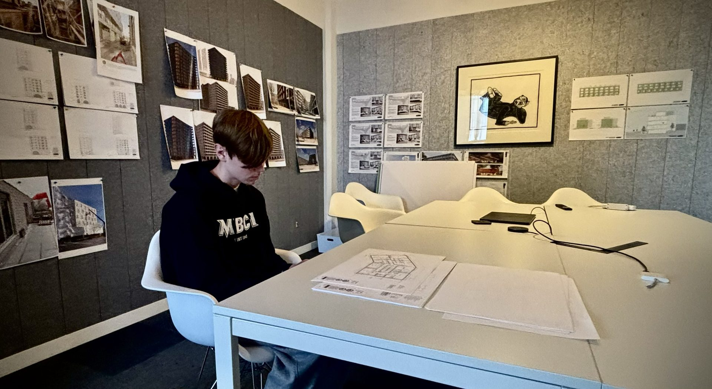
Working sessions at AtLrg Architecture, Winnipeg
GavinKS_StudioFinal.blend›Showcase
Creative accomplishments
From the first donut to a 3D-printed city model, a full view of what was built across the semester.
The culmination of the project wasn't just a Blender file. It was a physically 3D-printed massing model, placed on a 3D print of the full downtown Winnipeg. The orange models represent different design options for the exChange site, embedded in their real-world urban context.
AtLrg focuses much of their work in the downtown area, and seeing the 3D-printed map of the Exchange, with all its different buildings, was really cool. It also gives builders a way to see how their building will look in relation to the rest of the neighbourhood.
Multiple massing options designed and compared
Printed at 1:500 scale to match the city base model
Constraints from real city maps factored into every option
Presented in context of surrounding downtown Winnipeg
On site at AtLrg
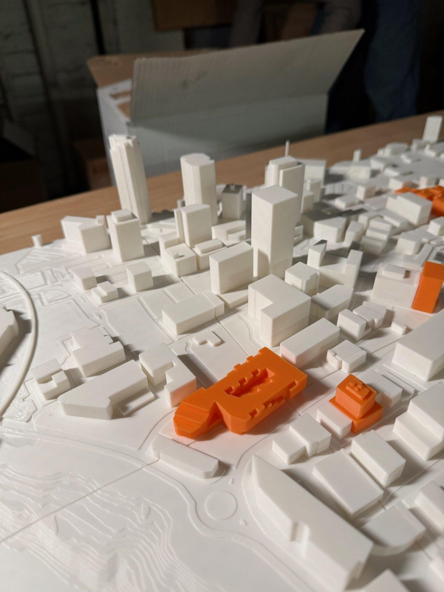
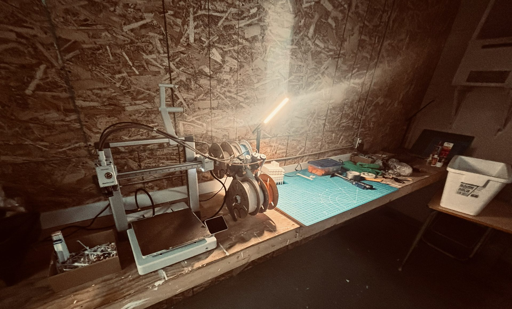
GavinKS_StudioFinal.blend›Final Reflection
What I built. What I learned.
The building that emerged from this project isn't the one I originally planned, and that turned out to be the point.
My original goal for Studio was to learn Blender and create my own apartment building. After I started, I realized it was much harder than I expected. I watched tutorials and practiced different tools, but I had trouble doing more advanced things on my own. Working with a tutor who could see exactly what I was doing, and what I was doing wrong, really helped me pull everything together.
In the end, I was able to create a building that meets the real site requirements for an actual downtown Winnipeg site. It isn't as detailed or fancy as the one I had originally planned, but I learned a lot about 3D modeling and how Blender works. This project taught me that learning new software takes a lot of time and practice.
I thought I was only learning how to use Blender, but ended up having to learn a lot more about a lot of different things. From 3D printing, to how to read zoning documents, to even webpage design. This project opened my eyes to what is possible, and what I am capable of, if I am not afraid to try and willing to ask for help.
One of my favorite parts of the project was meeting with architects and learning how they come up with building ideas. They showed me examples of their work and explained how buildings go from an idea to a finished design. Seeing the number of previous designs they go through to get to the final one was reassuring, even the professionals have to start over every now and then.
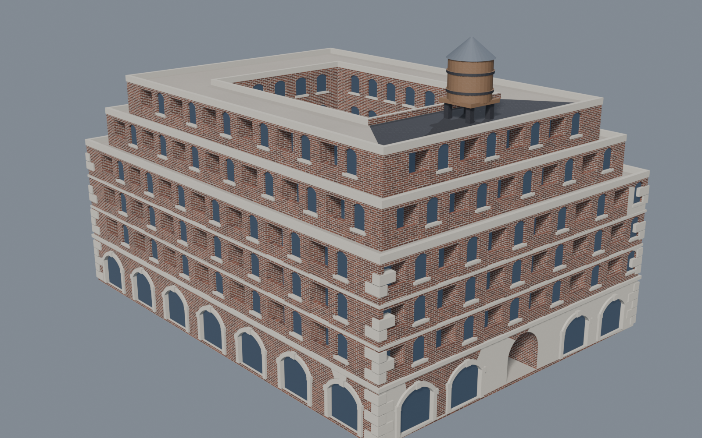
Final design: front elevation
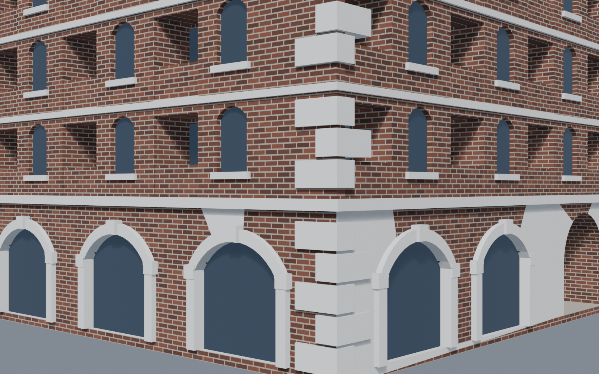
Corner view
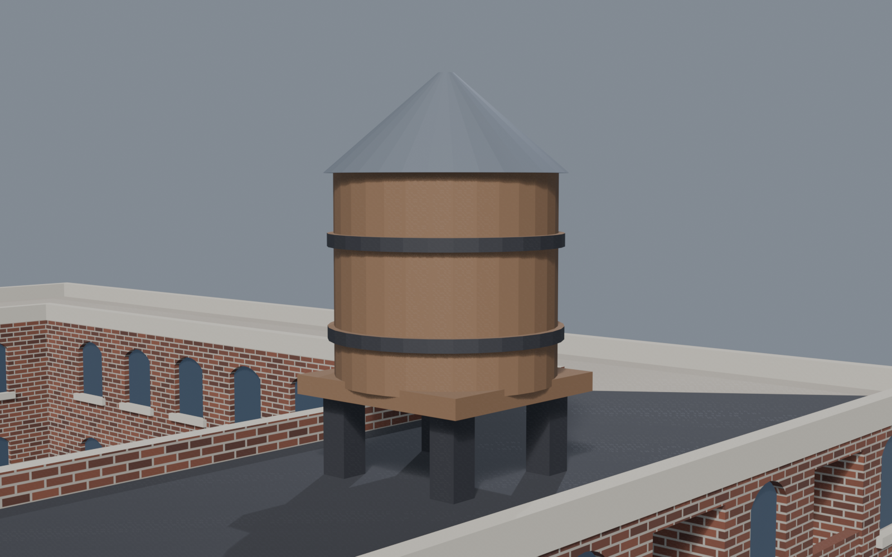
Tower element
Fly-over Render
Final build: fly-over render
End of File: Keyframe 250
"Even though my project changed from my original idea, I am proud of how much I learned, and excited to see what I will do with it in the future."